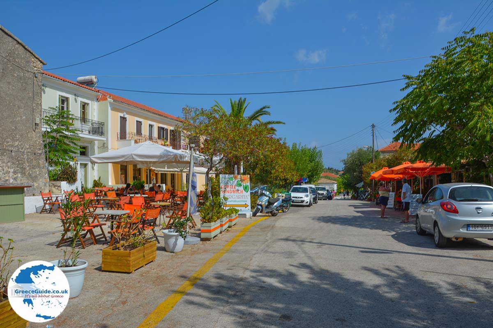

terenceithaque

Stavros (cross) is an Ithacan village located 16 km from Vathy
Among the notable places of the village, we can mention Sotiris(savior) Church, Agia Varvara Churchs and Zoodochos Pigi Church, and also a bust of Ulysse and traditionnal houses that survives to the 1953 earthquake.
In Stavros, there are several taverns, cafes, hotel rooms, shops, a doctor and a post office 
Other informations are over there
Learn more on Stavros on Greeka
Are you looking for the content of a particular beach ? Click right here to access beaches index
Not on the page you are looking for ? Go to the index.
Do you have questions about the content of the site updates? Click here to know everything about updates.